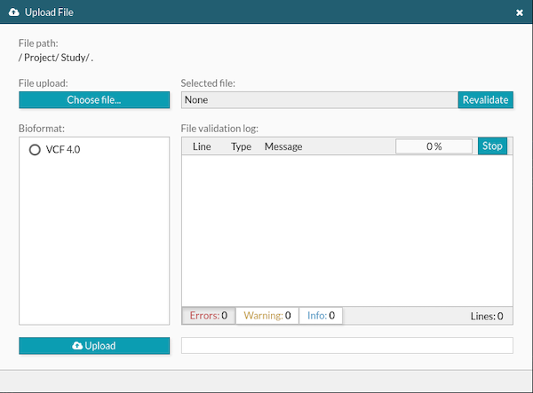

Cargar datos

Fig. 1 Formulario de carga de datos de Bier.app [1].
Problema
Contexto
Un primer paso en el análisis genómico es cargar el conjunto de datos genéticos que se quiere analizar y el conjunto de datos de soporte para el análisis (p. ej., una secuencia de referencia). Los datos pueden estar disponibles en ficheros estructurados en diferentes formatos (p. ej., BAM, VCF) y provenir de varias fuentes. El usuario quiere cargar el conjunto de datos al sistema de análisis genómico para poder procesarlos y analizarlos.
En los diagnósticos moleculares, por ejemplo, los investigadores analizan la información de variaciones genéticas de un individuo contenida en ficheros de texto. Estos ficheros deben ser cargados al sistema de gestión de datos genéticos para ser procesados y analizados.
Solución
Proveer un formulario de carga de datos donde el usuario sea capaz de especificar uno o varios conjuntos de datos provenientes de varias fuentes (p.ej., recurso en línea, fichero de texto, contenido de un fichero) y disponibles en varios formatos.
El formulario debe incluir al menos las siguientes entradas de datos:
Nombre.- Nombre del fichero a cargar.
Tipo.- Formato del fichero que puede tomar varios valores (p.ej., VCF, json, fasta, fastaq. dbsnf.tabular, gff3).
Contenido.- Los datos que se desea analizar. Permitir seleccionar conjuntos de datos dependiendo de su: tamaño (megabytes, gigantes terabytes, etc), accesibilidad (acceso local o remoto), cantidad (número de conjuntos de datos). Si el conjunto de datos se encuentran en uno o varios ficheros locales, el usuario debe poder seleccionarlos navegando por el repositorio local. Si el conjuntos de datos se encuentran disponible en la web, el usuario debe poder indicar la URL del recurso.
Las acciones disponibles y visibles para procesar la carga de datos incluyen: iniciar carga, pausar, parar, pegar (URL o datos). El procesamiento de los datos debe comunicar al usuario el avance en la lectura y carga del contenido. Esta comunicación incluye, pero no está limitada a, mensajes de error, alertas e información de procesamiento (p. ej. número de líneas procesadas).
Estructura
Patrones relacionados
Asociación: ninguna
Agregación: ninguna
Especialización: ninguno
Ejemplos
El formulario de la Figura 2 muestra el formulario de carga de datos provenientes de un fichero local o de un recurso remoto (en la web). El formulario permite arrastrar y soltar los ficheros que contienen el o los conjuntos de datos que se desea analizar. En la parte inferior el usuario puede indicar el tipo de fichero a cargar (“Type”) y como caso adicional, la especie u organismo al que pertenece el conjunto de datos a cargar. Los comandos de acción del formulario incluyen la opción para cargar un fichero local, copiar y pegar el contenido de un fichero de datos genómico y las opciones para el procesamiento: Pausar, Restablecer, Iniciar/Parar y cerrar formulario.
Fig. 2 Formulario de carga de datos de la aplicación Galaxy [1]
Bibliografía